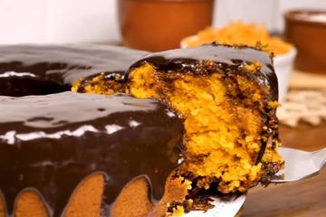

Bolo de Chocolate
- 2 xícaras (chá) de farinha de trigo
- 1 e meia xícara (chá) de açúcar
- 1 xícara (chá) de Chocolate em Pó NESTLÉ® CHOCOLATERIA
- 1 colher (sopa) de fermento em pó
- Meia colher (chá) de bicarbonato de sódio
- 1 xícara (chá) de óleo
- 3 ovos
- 2 xícaras (chá) de água fervente
Bolo de Cenoura
- 3 cenouras médias picadas
- 4 ovos
- 1 xícara (chá) de óleo
- 2 xícaras (chá) de açúcar
- 2 e 1/2 xícaras (chá) de farinha de trigo
- 1 colher (sopa) de fermento em pó

Bolo de Fubá
- 3 ovos
- 2 xícaras (chá) de açúcar
- 3 colheres (sopa) de margarina
- 2 xícaras (chá) de leite
- 2 xícaras (chá) de fubá
- 1 xícara (chá) de farinha de trigo
- 1 colher (sopa) de fermento em pó